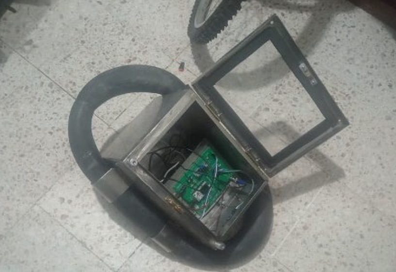
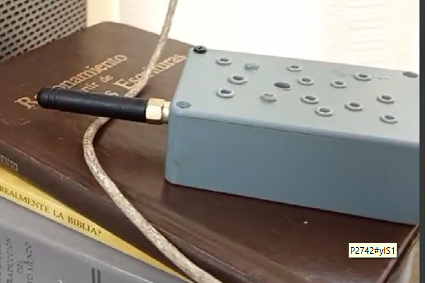

Implementación de un sistema de recopilación de datos en el monitoreo de cuerpos hídricos
Portafolio profesional · Amisadai Bautista Sánchez · ESIME Zacatenco (IPN)
IoT
LoRa (915 MHz)
ESP32
Sensores multiparamétricos
GPS NEO‑6M
MicroSD
Dashboard en la nube
Regresión lineal
Objetivo del proyecto
Desarrollar un sistema autónomo y de bajo costo para el monitoreo de calidad de agua en tiempo (casi) real, integrando sensores de pH, turbidez, TDS, temperatura y conductividad (estimada desde TDS), con procesamiento local en ESP32, transmisión LoRa, georreferenciación con GPS NEO‑6M, almacenamiento en MicroSD y visualización en la nube; además, se incluye un algoritmo de predicción (regresión lineal) para identificar tendencias.
Arquitectura y flujo
Nodo sensor (embebido)
- ESP32 LoRa SX1276 · ADC 12‑bits + OneWire · DeepSleep cíclico
- Sensores: pH (PH‑4502C), Turbidez (SEN0189), TDS (SEN0244), Temperatura (DS18B20)
- Antena SMA 3 dBi
Comunicación y visualización
- Enlace LoRa P2P para larga distancia y bajo consumo
- Nube (p. ej., ThingSpeak) para almacenamiento/visualización
- Predicción: regresión lineal básica para tendencias (pH, TDS)
Integración técnica
Adquisición
Lectura analógica y digital con filtrado y promediado; compensación por temperatura en TDS.
ADC (ESP32) 1‑Wire SPI / UARTTransmisión
LoRa 915 MHz, parámetros optimizados para equilibrio de alcance y consumo.
LoRa (SX1276) SMA 3 dBiPersistencia
Registro redundante en MicroSD + publicación en la nube; georreferenciación con GPS.
MicroSD GPS NEO‑6M Cloud DashboardGalería del proyecto






Resultados y validación
- Operación estable del nodo: adquisición periódica, transmisión LoRa y respaldo en MicroSD.
- Tendencias y predicción con regresión lineal (pH/TDS) para anticipar desviaciones.
- Comparación frente a referencias de laboratorio y normativas (NOM‑127‑SSA1‑2021/OMS) en pruebas controladas y de campo.